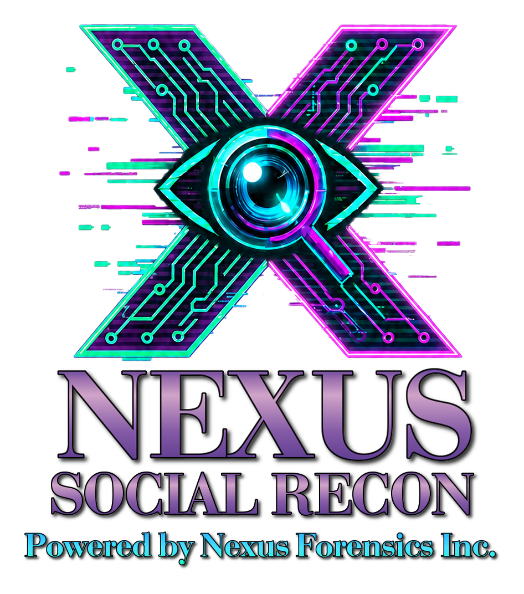

Preserve what is visible
Capture is directed by the investigator and limited to what an authorized user can see on screen. No background scraping.
Nexus Forensics Inc.
We build investigator-first software that helps investigators understand a digital footprint: what is publicly visible, how it connects, and how to explain it to someone else.
 Facebook
Facebook
 Instagram
Instagram
 TikTok
TikTok
 YouTube
YouTube
 Threads
X
Snapchat
LinkedIn
Threads
X
Snapchat
LinkedIn
 Reddit
Reddit
 Telegram
Marketplace · Kijiji
LeoList
Web
Telegram
Marketplace · Kijiji
LeoList
Web
Where evidence leads

About Nexus Forensics
Nexus Forensics Inc. builds software for people who have to explain their evidence to someone else: investigators, analysts, and legal teams working from public online sources.
A digital footprint is more than a screenshot. It is the profiles, posts, comments, images, identifiers, and connections a person leaves across platforms. Our work is turning that footprint into an organized, source-linked case record that the investigator controls.
Our Philosophy
Nexus is designed around the confidence investigators need when evidence must be reviewed by someone else.
Capture is directed by the investigator and limited to what an authorized user can see on screen. No background scraping.

The investigator decides what enters the case, what deserves attention, and what belongs in the final report.
Our software keeps case data on the investigator's workstation or organization-controlled storage by default.
Findings come with supporting context and links, so a reviewer can see why something was flagged instead of facing an unexplained result.
Every finding stays tied to its source URL, local file, hash, and timestamp, so a reviewer can follow it back to the original.
Visible, user-directed workflows help keep collection focused on what an authorized investigator sees and selects.
Our Methodology
Every Nexus workflow follows the same five steps, so the record stays understandable from collection through review.
Review visible public content in real time through the standard platform view.
Preserve selected screenshots, visible details, source URLs, and local evidence.
Search, compare, and flag the material that matters to the investigation.
Link repeated identifiers, accounts, and media across the case.
Produce reports a reviewer can follow back to the original source.
Current Product
Nexus Social Recon is the public evidence workflow Nexus Forensics is presenting first: focused enough for single investigators, with a path toward team and server deployments.
Explore Nexus
Social Evidence IntelligenceCapture and preserve visible public social media evidence in structured, investigator-controlled cases. Use OCR, User Index cards, case targets, face and object matching, prior-capture alerts, and local cross-case intelligence to identify connections and produce clear reports.
View Nexus Social ReconBuilt for Investigative Work
The evidence workflow stays consistent while the operational language, review requirements, and reporting expectations change by audience.
Preserve time-sensitive public evidence and create clear case records within investigator-led, agency-controlled workflows.
Organize online and witness evidence for litigation, internal review, due diligence, and incident response.

Move faster from discovery to documented findings without assembling every evidence report by hand.
Contact
Ask about public-source investigation workflows and how Nexus Forensics can help your team.
Questions about our work, partnerships, or how we can help an investigation.
Send an emailTell us about the kind of investigations you run and we will set up a time to talk.
Request a conversationTalk to Nexus Forensics about public-source investigation workflows and how we can help your team.